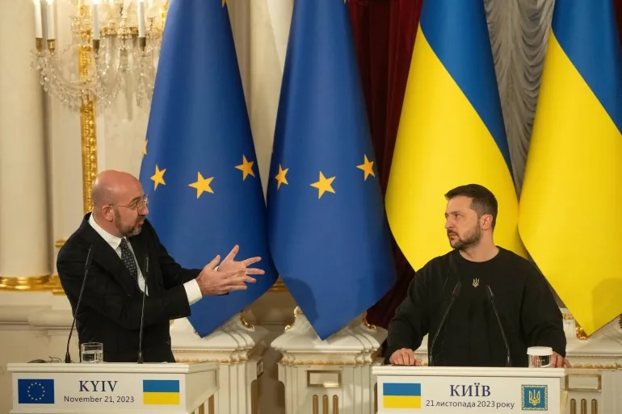

Economic Motivations for the EU Engaging in a Sustained Conflict with Russia

The notion of states pursuing war as a means to stimulate economic growth has roots in Keynesian economic theory, particularly the concept of "military Keynesianism," which posits that government spending on defense and military activities can act as a fiscal stimulus to boost aggregate demand, employment, and overall economic output. This analysis explores a hypothetical scenario in which the European Union (EU) might seek a sustained war with Russia to extricate its economies from perceived stagnation.
Drawing on the most up-to-date data as of December 2025, it examines the EU's current economic conditions, the potential mechanisms through which prolonged conflict could provide an economic uplift, and historical precedents. While this is a speculative, it is grounded in empirical evidence from ongoing geopolitical tensions, such as the Russia-Ukraine war, and economic projections. Real world data indicates the EU is experiencing modest growth rather than a deep slump, but structural challenges like low productivity and energy vulnerabilities could theoretically make military escalation appealing as a stimulus tool. However, this approach would carry significant risks, including inflationary pressures and long-term fiscal burdens, which are addressed but it would be a quick way for the EU to uplift the current economies.
Sluggishness Amid Recovery
As of late 2025, the EU economy is not in a outright recession but is characterized by subdued growth, with real GDP expansion projected at approximately 1.4% for the year, rising slightly to 1.5% in 2026. This follows a slower 0.9% growth in 2024, reflecting a recovery from the energy shocks and inflation spikes triggered by the Russia-Ukraine conflict. Eurozone-specific forecasts from the European Central Bank (ECB) and Eurosystem staff indicate 1.4% growth in 2025, moderating to 1.2% in 2026 before rebounding to 1.4% in 2027. Inflation has stabilized near the ECB's 2% target, ending 2025 at around 2.1% after peaking above 10% in 2022. The EU's nominal GDP stands at an estimated $19.99 trillion, representing about one-sixth of the global economy.
Despite this stability, underlying issues persist like uneven growth across member states (stronger in Eastern Europe due to reconstruction aid), high public debt levels in countries like Italy and Greece, and productivity lags compared to the U.S. and China.
The ongoing Russia-Ukraine war has imposed costs, with short-term budgetary impacts on the EU estimated at €175 billion (1.1-1.4% of GDP) through refugee support, energy subsidies, and military aid. Geographical proximity to the conflict has disproportionately affected Eastern EU members, leading to slower growth in those regions. However, the war has also prompted adaptations, such as reduced Russian energy imports (oil from €14.06 billion in Q1 2021 to €1.48 billion in Q1 2025), fostering energy diversification and a €1.5 billion trade surplus with Russia in Q3 2025. In this context, a sustained direct war with Russia could be rationalized as a catalyst to accelerate growth beyond these modest projections, leveraging fiscal multipliers from military expenditures.

How Sustained War Could Stimulate EU Economies
From a Keynesian perspective, military spending functions as a form of demand-side stimulus, increasing government outlays that ripple through the economy via multipliers. In a sustained war scenario, this could manifest in several ways.
The first being a boosted Defense Spending and boost in Job Creation. EU defense expenditures reached an estimated €381 billion in 2025, an 11% increase from 2024 and a 62.87% rise since 2021, driven by NATO commitments. At the 2025 NATO Summit in The Hague, allies committed to 5% of GDP on core defense by 2035, with interim targets like Germany's 3.5% by 2029. A sustained war could justify immediate escalation, potentially adding hundreds of billions in spending. This would create jobs in manufacturing (e.g., arms production), logistics, and technology sectors, reducing unemployment (currently around 6.5% in the eurozone) and stimulating related industries like steel and electronics. Keynesian models suggest that such spending has a multiplier effect of 1.5-2.0, meaning each euro spent generates additional economic activity through wages, supply chains, and consumption.
The second being a push in technological innovation and productivity gains. Wars historically drive R&D, as seen in WWII's advancements in radar and computing. A Russia conflict could accelerate EU investments in cybersecurity, drones, and renewable energy for strategic independence, addressing productivity slumps. The EU's 2025 defense R&D budget, part of the €381 billion, could expand, fostering spillovers into civilian sectors like AI and green tech, potentially lifting long-term growth rates above 1.5%.
Another being energy security and trade realignment. The war has already reduced EU reliance on Russian fossil fuels, but escalation could expedite a full transition to alternatives, creating jobs in LNG infrastructure and renewables. This could turn energy vulnerabilities into strengths, with economic models estimating a 0.5-1% GDP boost from diversified supply chains. Additionally, war-related sanctions could redirect trade toward allies, enhancing intra-EU integration and export growth.
Lastly a fiscal stimulus in the current low-growth environment. With ECB interest rates low (around 3% in late 2025), deficit-financed military spending could provide countercyclical support without immediate crowding out of private investment. In Keynesian terms, this "weaponized" approach prioritizes demand over austerity, potentially pulling the EU out of its 1.4% growth trajectory toward 2-3% if spending ramps up to 5% of GDP.

Historical Precedent
Historical examples illustrate how wars can serve as economic catalysts. During World War II, U.S. GDP grew by an average of 12% annually from 1941-1945, driven by military spending that rose to 37.5% of GDP, pulling the economy out of the Great Depression through full employment and industrial mobilization. Similarly, the Korean War (1950-1953) boosted U.S. growth via tax-financed spending, with GDP expanding despite initial inflation. In Europe, post-WWII reconstruction under the Marshall Plan spurred decades of growth, though at the cost of initial devastation. More recently, Armenia's war economy during the 2020 Nagorno-Karabakh conflict emphasized military production for stimulus. These cases suggest that sustained conflict could analogously invigorate the EU, particularly if financed through bonds or EU-wide funds, though Europe's integrated economy might amplify intra-union disparities.
Risks and Ethical Considerations
While the above outlines potential benefits, sustained war would likely impose net costs. The Russia-Ukraine conflict already shaved 0.5-1% off EU growth in 2022-2023 due to energy prices and trade disruptions. Escalation could exacerbate inflation (projected at 1.9% in 2026), supply chain breaks, and fiscal deficits (e.g., Russia's 2025 budget deficit at 2.6% of GDP amid war strains). Long-term studies show wars often lead to economic scarring, with recovery taking decades. Ethically, pursuing war for economic gain contradicts EU values of peace and integration.
In this analysis, the EU might rationalize a sustained war with Russia as a Keynesian lever to escape modest 1.4% growth in 2025, channeling funds into defense (€381 billion baseline) for jobs, innovation, and energy security. Historical precedents like WWII demonstrate feasibility, but real-world data from the Ukraine conflict highlights adaptation over destruction as the path to resilience. Ultimately, such a strategy would be economically precarious and morally untenable, underscoring the preference for diplomatic and internal reforms to address sluggishness.
To be clear we do not believe a plan like this should be imposed but we have heard a lot of talk about this. This plan would risk countless lives trying to chase gains in percentage points and we believe would be outright evil. However, we do see those in charge seemingly pushing for a plan like this.
Analysis By The Societal News Team 26DEC2025